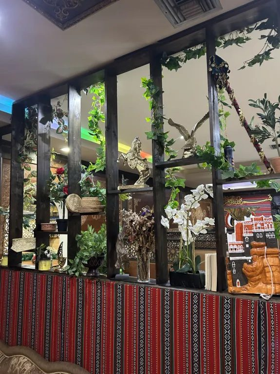
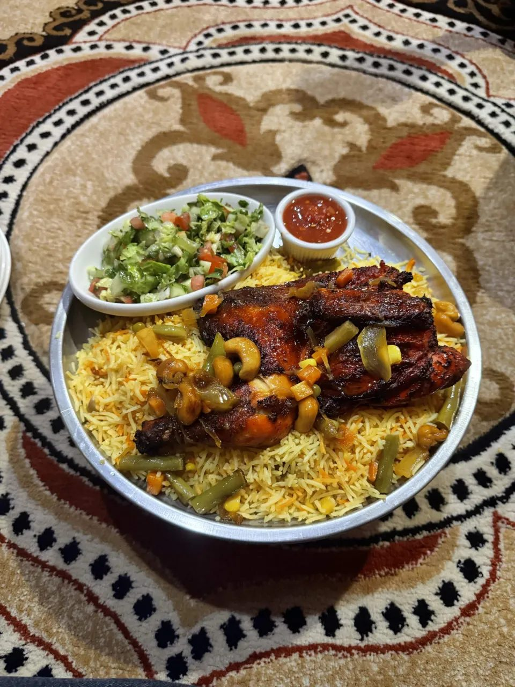
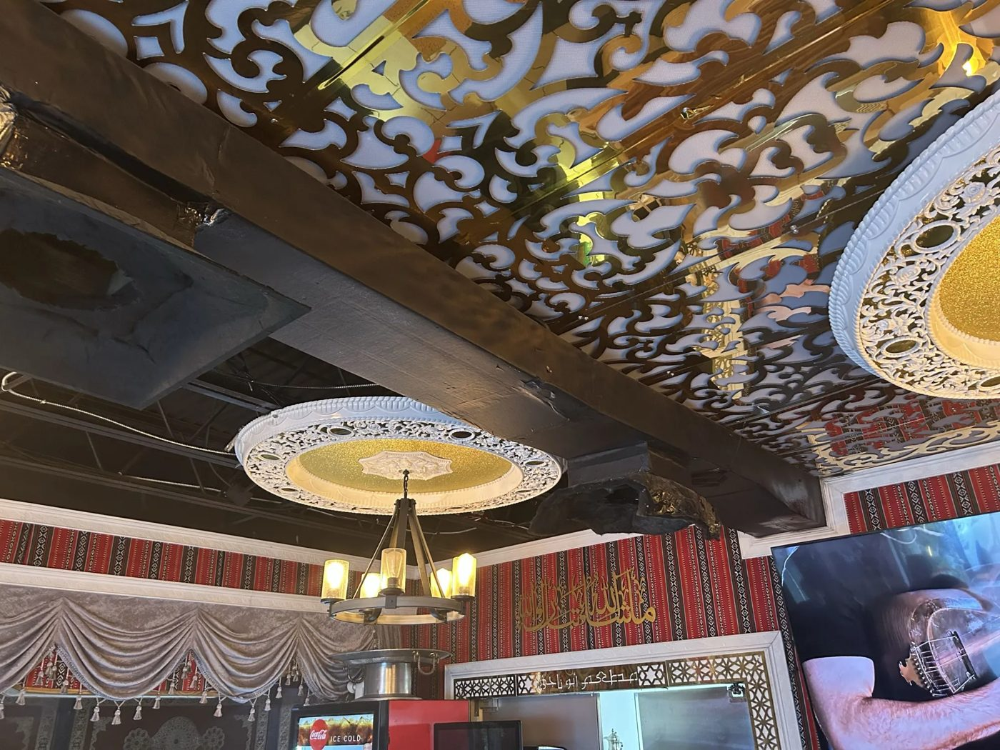

Exploring the Khaleeji region, one plate at a time
Beyond the skylines of Dubai: what coffee, sweets and shared platters of rice say about the people of the Arabian Gulf.
Welcome
We are three USF Honors students in IDH 4200, Geographical Perspectives. Our group explored the Khaleeji region of the Arabian Gulf through its food.
Most people picture the Gulf as skyscrapers and luxury. We wanted to look past that, to the Bedouin and seafaring roots, the hospitality and the traditions families keep alive as their cities change. Along the way we researched the region, visited a Yemeni restaurant in Tampa, interviewed a restaurant staff member from the Khaleeji region, and presented what we learned to our class.
Start with the region, or jump to any section below.

Explore the blog
Meet the Khaleeji Region
What Khaleeji means, a map, and each country plus Yemen.
Coffee, Sweets and Rice
Gahwa, luqaimat, machboos and how to be a good guest.
Food Show Reviews
Our reviews of two afikra Matbakh episodes, on Emirati and Bahraini food.
The Sound of the Gulf
From pearl divers’ songs to Khaleeji pop.
In Their Words
Our interview with a staff member at Abu Naji.
Class Reflections
Discussions, readings and our classmates’ presentations.
Our Presentation
How our class presentation was organized, with slides.
Read More
Academic article, readings, nonprofits and all our sources.
Restaurant Visit Reflections
Our group visited Abu Naji, a Yemeni restaurant in Tampa. Here is what each of us took away from it.

A Floor Seat at the Table: Our Visit to Abu Naji
Majlis seating, mild dips, and finally learning the difference between mandi and mabdi.

Tradition on the Carpet: A Reflection on Abu Naji
How a shared carpet shapes conversation, and what the chicken mabdi reveals about traditional cooking techniques.

Sitting Low, Eating Together: Lunch at Abu Naji
How floor seating and shared platters changed the way we talked, and what a Yemeni meal in Tampa says about food crossing borders.
About Us
USF Honors College · IDH 4200 Geographical Perspectives · Fall 2026
Aarav Jain
Region profile · Site design
Computer Science student at USF. Wrote the region profile and built this site.
Contact: aaravj@usf.edu
Kartheek Reddy Malireddy
Food and culture · Interview
Biomedical Sciences major with a double minor in Biomedical Physics and Philosophy. I enjoyed learning about foods from the Middle East and how they relate to my own culture, making new connections between cultures, and learning how guests are served and welcomed.
Contact: kmalireddy@usf.edu
Tanish Guin
Music · Interview
Biomedical Sciences major. Exploring cultures through a gastronomic perspective was new to me, and this project opened up a whole new way of looking at food.
Contact: tanish@usf.edu